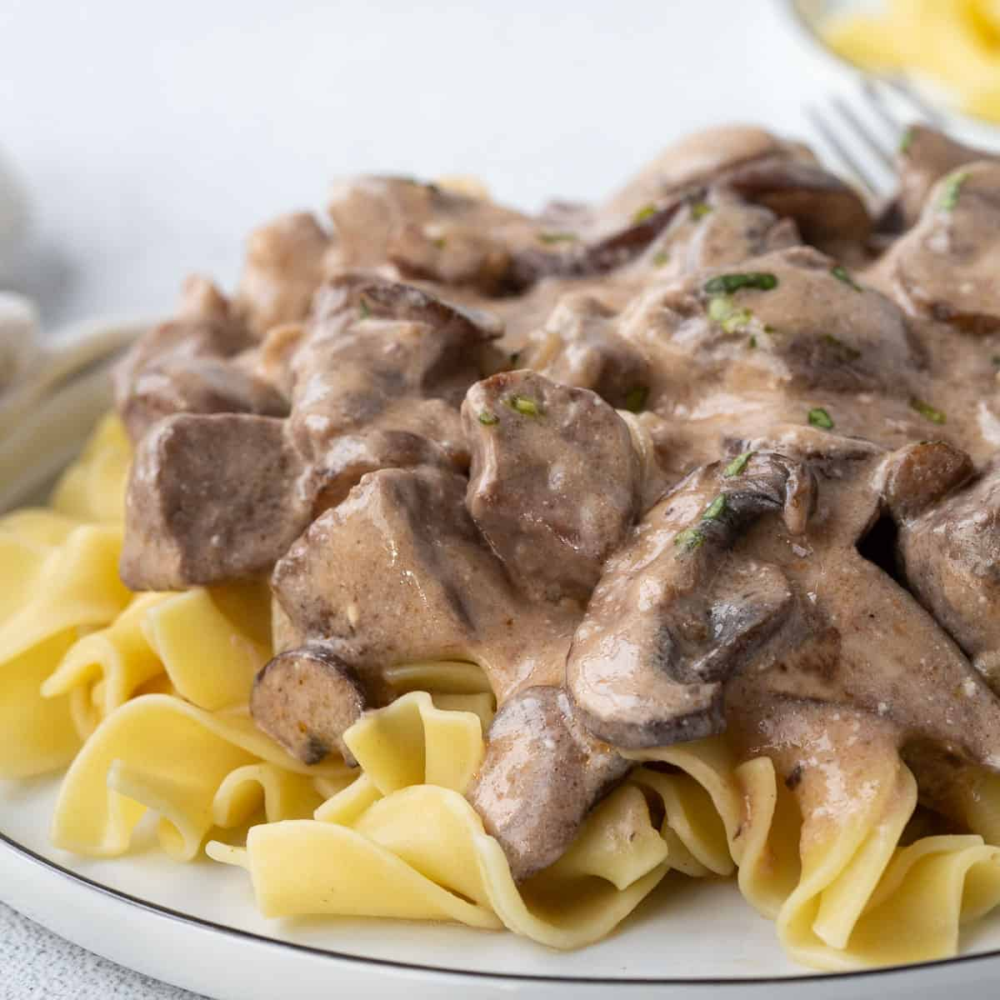

Beef Stroganoff

Ingredients
- Olive oil
- One large onion
- Mushroom blend
- Garlic
- Dry red wine
- fatty cut of beef
Directions
- Heat oil in heavy large skillet over high heat until very hot.
- Working in batches, add meat in single layer and cook just until brown on outside, about 1 minute per side.
- Melt 4 tablespoons butter in same skillet over medium-high heat.
- Add button mushrooms. Sprinkle with pepper and sauté until liquid evaporates, about 12 minutes.